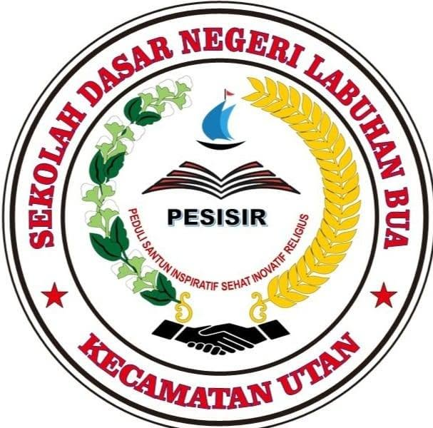
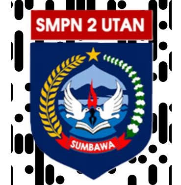
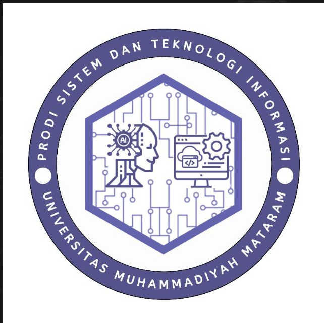

Flutter & Dart
Mengembangkan aplikasi mobile lintas platform dengan Riverpod, GoRouter, Dio, secure storage, serta dukungan unggah media.
Hello, world! Saya
Saya bekerja dengan Flutter dan Dart, Node.js, Fastify, MySQL, Python, serta teknologi web—sesuai proyek yang tersimpan di GitHub saya.

Tentang saya
Saya menikmati proses membangun produk dari antarmuka aplikasi, logika backend, database, sampai siap dijalankan.
Repository GitHub saya menunjukkan proses belajar lintas platform: aplikasi Lentera Cendikia dengan Flutter dan Dart, REST API menggunakan Node.js dan Fastify, penyimpanan MySQL, website sekolah, serta latihan algoritma menggunakan Python.
Saya terus mengembangkan kemampuan melalui tugas kuliah dan proyek yang benar-benar dikerjakan. Setiap teknologi yang ditampilkan di portofolio ini kini disesuaikan dengan source code yang tersedia di akun GitHub saya.
Keahlian
Mengembangkan aplikasi mobile lintas platform dengan Riverpod, GoRouter, Dio, secure storage, serta dukungan unggah media.
Membangun backend REST API, autentikasi, validasi peran, keamanan HTTP, dan pengelolaan unggahan.
Mengelola koneksi database, query terparameterisasi, serta penyimpanan data aplikasi dan berkas.
Membangun website responsif dan interaktif, termasuk website informasi SDN Labuhan Bua dan portofolio ini.
Menerapkan logika pemrograman, pengurutan data, dan algoritma binary search dalam tugas struktur data.
Mengelola version control serta menyiapkan proyek untuk GitHub Pages, Render, Railway, Vercel, web, dan APK.
Proyek pilihan
Mobile & Full-Stack · 2026
Aplikasi manajemen bimbingan belajar dengan Flutter, state management Riverpod, routing, REST API Node.js/Fastify, autentikasi, dan database MySQL.
Lihat repository ↗
Web Development · 2026
Website profil sekolah berisi informasi pendidikan, sambutan kepala sekolah, data akademik, kontak, SEO dasar, sitemap, dan tampilan responsif.
Lihat repository ↗def binary_search(data, target):
left, right = 0, len(data)-1
while left <= right:
mid = (left + right) // 2
> target ditemukan ✓Data Structure
Latihan struktur data menggunakan Python untuk mengurutkan karakter dan melakukan pencarian biner.
Lihat repository ↗Personal Portfolio · Live
Ruang digital personal dengan animasi teks, perspektif 3D, visual interaktif, identitas Barcelona, riwayat pendidikan, dan akses langsung ke seluruh kontak.
Buka halaman utama ↑Alumni & pendidikan
Saya menempuh pendidikan dasar hingga menengah di Utan, Sumbawa. Sejak 2024, perjalanan tersebut berlanjut ke bidang teknologi informasi di Universitas Muhammadiyah Mataram.
* Tahun sekolah dihitung berdasarkan jenjang normal tanpa jeda, dengan tahun masuk kuliah 2024 sebagai acuan.Sekolah Dasar · Perkiraan 2012–2018
Awal perjalanan pendidikan formal dan fondasi pembelajaran dasar.
Alumni
Sekolah Menengah Pertama · Perkiraan 2018–2021
Mengembangkan pengetahuan, kedisiplinan, dan minat belajar pada jenjang menengah.
AlumniSekolah Menengah Atas · Perkiraan 2021–2024
Tahap pendidikan menengah atas sebelum melanjutkan studi di bidang teknologi informasi.
Alumni
Perguruan Tinggi · 2024–Sekarang
Program Studi Sistem dan Teknologi Informasi. Saat ini memperdalam pengembangan perangkat lunak, teknologi web, dan penerapan sistem informasi.
Mahasiswa aktifGitHub profile
Tempat source code aplikasi mobile, backend API, website, latihan Python, dan portofolio ini dikelola melalui Git.
Buka profil GitHub ↗Project-based skillsLentera Cendikia · SDN Labuhan Bua · Struktur Data


Pengingat dalam proses
QS. ASY-SYARḤ · 94:5–6
فَاِنَّ مَعَ الْعُسْرِ يُسْرًاۙ
Fa'inna ma‘al-‘usri yusrā(n).
“Maka, sesungguhnya beserta kesulitan ada kemudahan.”
اِنَّ مَعَ الْعُسْرِ يُسْرًاۗ
Inna ma‘al-‘usri yusrā(n).
“Sesungguhnya beserta kesulitan ada kemudahan.”
Mari terhubung
Saya terbuka untuk belajar, bertukar ide, dan mengembangkan proyek digital bersama. Pilih platform yang paling nyaman—semua tombol terhubung langsung.